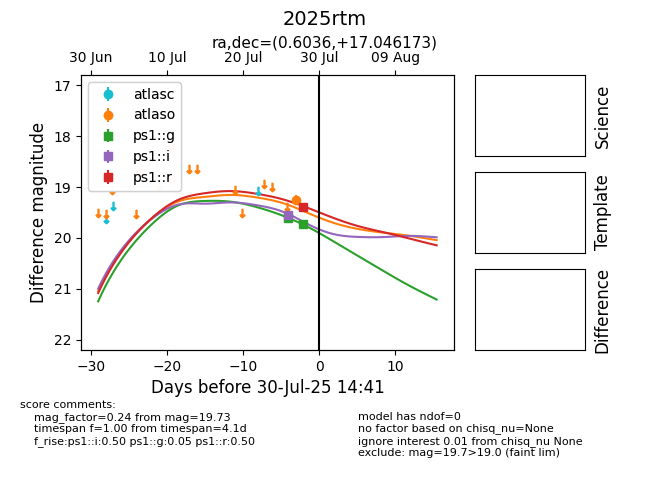

Target 2025rtm at 2025-07-30 14:41, see:
YSE: ziggy.ucolick.org/yse/transient_detail/2025rtm
alt names
2025rtm (yse)
coordinates:
equatorial (ra, dec) = (0.6036,+17.04617)
galactic (l, b) = (106.4717,-44.25311)
photometry
last atlaso=19.25, ps1::g=19.73, ps1::i=19.56, ps1::r=19.40
1 atlaso, 2 ps1::g, 1 ps1::i, 1 ps1::r detections
